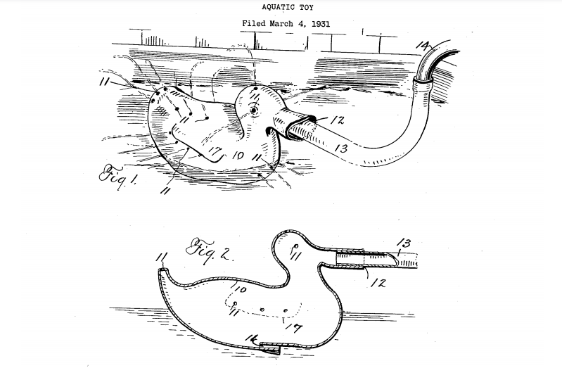

How rubber ducks came to be
Rubber ducks, everyone who matters lovers rubber ducks. These facinating beings have existed since the 1800s with creation of vulcanised rubber
They have been around for awhile and have helped in some suprising ways
Rubber duckies have helped scientists who study ocean currents. In the 1990s, shipping containers full of the yellow floating toys went overboard off a cargo ship in the ocean. Since then, the ducks have been slowly but steadily showing up all around the world, including Canada, South America, Australia, and England. Where and when these duckies show up teaches oceanographers a lot about how global ocean currents move and change throughout the seasons.
Further down is the history and factors invovling these squeaky freinds, although futher in you may find something you wish not to squeak of...
More duck
The earliest version of a ‘rubber duck’ first appeared in the late 1800s, when American chemist Charles Goodyear (later of tyre fame) invented vulcanised rubber – that’s rubber hardened via a process of heating with sulphur, making it pliable, mouldable and, most importantly, waterproof. Though, of course, the production of rubber toys wasn’t the original intended purpose they soon became an unstoppable force...
It wasn’t until the 1930s that the rubber duck’s association with bath-time being a fun toy suitble for water based enviroment. Around this time, two separate duck bath toy products were developed, the first born from the mind of an inventor from Maryland, and the other from an unlikely collaboration between the Walt Disney Company and a latex manufacturer.
The first, invented in 1931 by Eleanor Shannahan of Maryland USA, was designed as an aquatic toy that could sit either above or below the surface of the bath, and would emit jets of water from the mouth and other small holes. In her own words, the toys would “produce a fountain like effect, and enable the playing of pranks by one person on another by the squirting of a fine stream of spray upon the face or other parts of a person”.

Rubber ducks really hit the big time when in 1947, a sculptor called Peter Ganine filed a patent for a duck toy that he had created out of vinyl. Painted bright yellow and including their famous ‘squeaker’, the ducks were reproduced in their thousands and sold across the world. Then, in 1970, their fame grew to new heights when the song ‘Rubber Duckie’ was featured on Sesame Street, sung by Ernie. The song was such a hit that it even made it to number 11 in the Billboard Charts in the 1970s. It is estiamted that 5 million rubber ducks have been sold in the 70s alone.
since then, these fellas have become very popular, for better or for worse. The largest rubber ducky collection is owned by Charlotte Lee. currently she has amassed around 5,000 duckies.
At the upper end of the webiste you may see options that lead to a small biography of other ducks as well as a quiz. Feel you are up to the quask...Im really struggling for duck puns here.